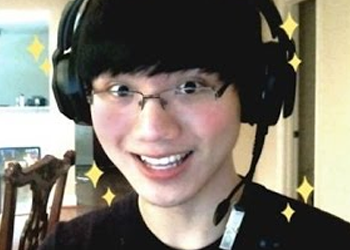
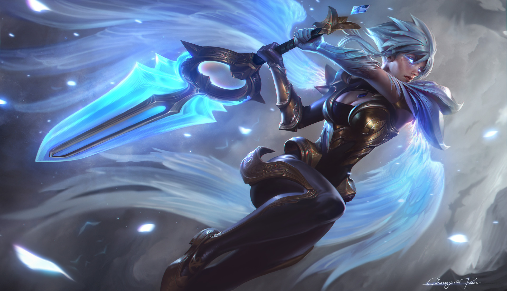
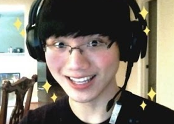
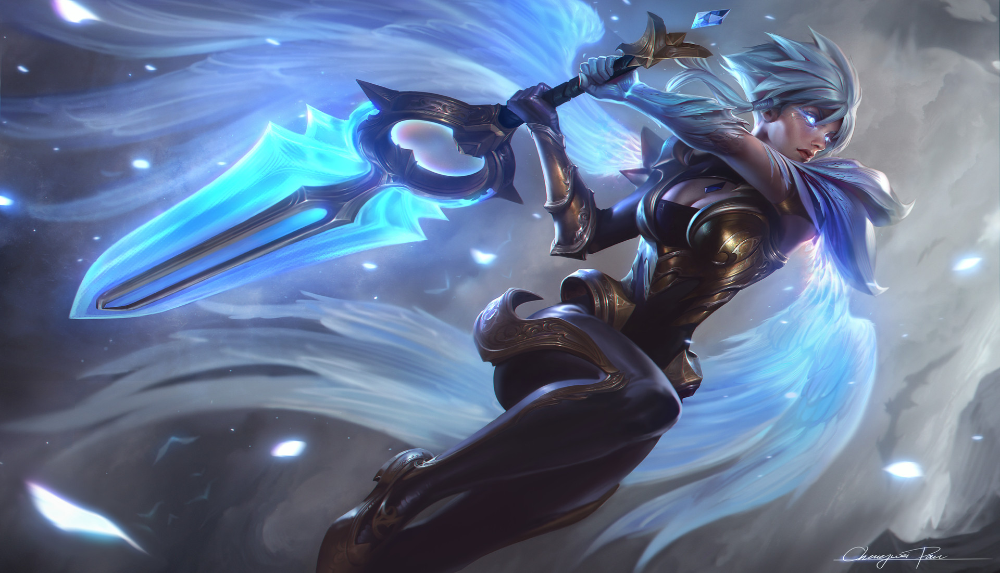

Albert "잘못" Zheng, better known as "BoxBox," began playing League of Legends during its beta. Originally, he only played poppy. However, he began to consider riven as his favourite champion. Zheng reached prominence primarily due to advertisement of his stream through reddit, and streaming is his primary claim to fame.
 


